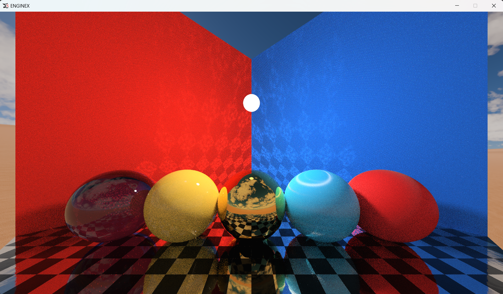

Subsurface Scattering 1
Subsurface Scattering 2
Subsurface Scattering 3
Subsurface Scattering 4
ENGINEX

Caustics (Reflective)

Caustics (Reflective and Refractive)

ray tracing with no denoiser

ray tracing denoiser at it's best (My own made ray tracing denoiser, does anti aliasing as well)

ray tracing without denoiser

ray tracing with denoiser

ray tracing with real time global illumination

rasterizer

house interior

Refractive Ball

color bleeding in global illumination

ambient occlusion

volume rendering

multiscattering (left with and right without)

sub-surface scattering

glass rendering (double sided refraction)

high index of refraction: diamond

Objects wireframe mesh

objects dynamic bounding boxes

objects bounding boxes and light effet radius and shadow capture range(bounded cameras to light)

cloth material shading

anisotropic material shading

parallax occlusion + normal mapping

sponza scene (EngineY)

Code Glance

procedurally creating cloth material from scratch

procedurally creating wood material from scratch

procedural wood material from upclose

neon media player music directory playlist

supports video playing as well

supports subtitles for videos too and light theme